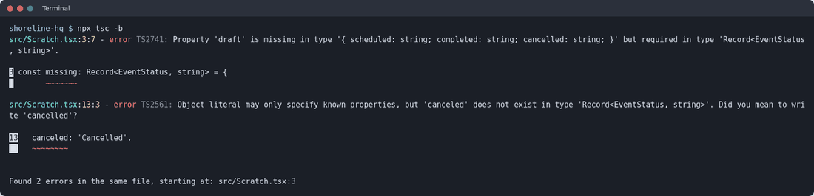
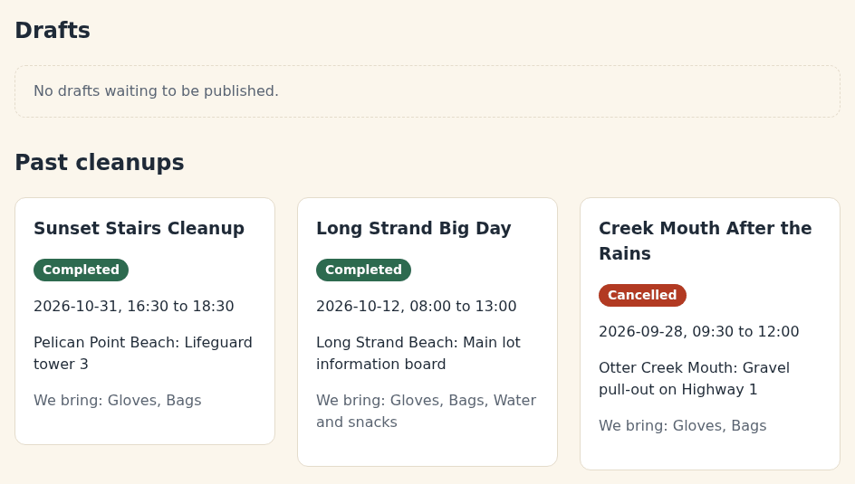
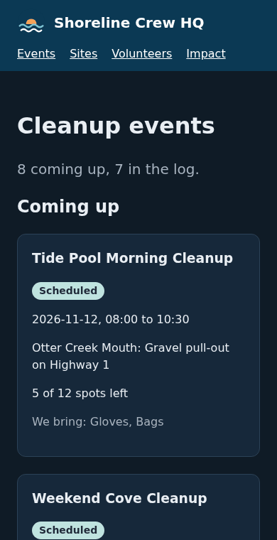

📋 Lesson 3.3: Lists and Conditional Rendering
Almost every screen you will ever build is a list of something, and almost every list has parts that only apply sometimes: a "Full" warning, a "Cancelled" badge, a friendly message when there is nothing to show. Today you will turn arrays into elements with keys React can trust, decide what appears with plain JavaScript, and let TypeScript make sure no status and no case is ever forgotten. By the end, Shoreline Crew HQ has its cleanup events page, built from the same CleanupEvent type the API uses.
🎯 Learning Objectives
By the end of this lesson, you will be able to:
- Turn an array into elements with
map, filtering and ordering it first without changing the original - Explain what a
keydoes, choose a stable one from the data, and read React's key warnings - Show parts of a component only when they apply with
ifand early returns,? :,&&andnull, and avoid the0trap - Give every value of a union a label with a
Recordlookup table that TypeScript keeps complete - Let a discriminated union decide what a component draws, with TypeScript narrowing each case
- Build the HQ's events page from a typed
CleanupEvent[]withEventList,EventCard,StatusBadgeandSpotsLine, including an empty state
📦 Code for this lesson
Starting code: lesson-09-start.zip · Finished code: lesson-09-end.zip. Each folder has a README with the commands to run it. Copy .env.example to .env.local in shoreline-hq before npm run dev.
In This Lesson
📋 From an Array to Elements
React has no special loop syntax. In Lesson 3.1 you saw that React draws an array by drawing each item in it, and in Lesson 3.2 you used sites.map(...) to make six cards. That is the whole idea: map turns an array of data into an array of elements, and you put that array in your TSX. Create src/Scratch.tsx in shoreline-hq again (your experiment file for this lesson) and try it with plain strings:
const supplies = ['Gloves', 'Bags', 'Line cutters']
export function SupplyList() {
const items = supplies.map((item) => <li key={item}>{item}</li>)
return <ul>{items}</ul>
}npx tsc -b is silent. Hover over items in VS Code: its type is JSX.Element[], an array of elements, inferred from what the callback returns. You did not annotate item either: supplies is a string[], so TypeScript knows each item is a string. The same inference made site a Site in Lesson 3.2. Usually you write the map right inside the braces, as SitesPage does; a variable like items is handy when the expression gets long.
Filter and order first, then map
A page rarely shows an array exactly as it arrived. The HQ's events page shows the upcoming cleanups in one list and the past ones, newest first, in another. Work out each list with the array methods you know from JavaScript, then map it:
const upcoming = events.filter((event) => event.status === 'scheduled')
const past = events
.filter((event) => event.status === 'completed' || event.status === 'cancelled')
.toReversed()Notice toReversed(), not reverse(). reverse() and sort() change the array they are called on, and the array here is data the component was given (Lesson 3.2: props and shared data are read-only). toReversed() and toSorted() return a new array and leave the original alone. They are part of ES2023, which is exactly what the template's tsconfig.app.json lists in lib, so TypeScript knows them. filter and map always returned new arrays, which is why they are the everyday tools of React code.
💡 Why this matters
Inboxes, feeds, rosters, search results, order histories: list screens are most of what front-end developers build. The habits from this lesson (data in, elements out, nothing changed along the way, a stable key for every item, a sentence instead of a blank space when a list is empty) are the ones reviewers check first in a pull request.
🔑 Keys: How React Tells Items Apart
When a list changes (a cleanup is added, one is cancelled, the list is filtered), React compares the new list with the one it drew last time and changes as little of the page as it can. To do that it must know which new item is which old item. Position is not enough: if a new cleanup appears at the top, every item moves down one place. So you give each item a key, a name that stays the same as long as the item does.
💡 Mental model: name tags at check-in
At a big cleanup, every volunteer gets a name tag at the check-in table. When the crew splits into teams and shuffles around the beach, the organizer still knows who is who by reading the tags, not by counting heads from the left. A key is that name tag. "The third person from the left" (an index) stops being the same person the moment someone joins the line; "Theo" stays Theo.
The rules are short:
- Take the key from the data. Every
CleanupEventandSitehas anidfrom the API: use it. A key is a string or a number. - Unique among siblings. Two items in the same list must not share a key. Items in different lists may.
- Stable. The same item gets the same key every time. Never make one up while rendering (
Math.random(),crypto.randomUUID()): a new key every render means "a brand-new item" every render, and oxlint'sreact(purity)rule from Lesson 3.1 flags those calls anyway. - On the element
mapreturns. Inevents.map((event) => <li key={event.id}>...</li>)the key goes on the<li>, not on something inside it.
As you saw in Lesson 3.2, key is one of React's own props: it never reaches your component, and TypeScript accepts it on every element through IntrinsicAttributes.
What React says when a key is missing or repeated
The linter catches a missing key while you type (you will see its message in the project). If one slips through, the browser console tells you when the page renders in development. With the key removed from the project's EventList, the console shows:
Browser console (dev server, key missing)
Each child in a list should have a unique "key" prop.
Check the render method of `EventList`. See https://react.dev/link/warning-keys for more information.And with a key that repeats (every event keyed by its status, so eight items are called scheduled), one error per repeat, starting with:
Browser console (dev server, duplicate keys)
Encountered two children with the same key, `scheduled`. Keys should be unique so that components maintain their identity across updates. Non-unique keys may cause children to be duplicated and/or omitted — the behavior is unsupported and could change in a future version.Read the second one closely: "may cause children to be duplicated and/or omitted". A repeated key is not a cosmetic warning; React may draw the wrong number of cards. Both messages appear only in development, never in a production build, which is one more reason to keep the console open while you work.
And the index?
map passes each item's position as a second argument, and key={index} makes the warnings go away. Neither TypeScript nor oxlint says a word about it:
const supplies = ['Gloves', 'Bags', 'Line cutters']
export function SupplyList() {
return (
<ul>
{supplies.map((item, index) => (
<li key={index}>{item}</li>
))}
</ul>
)
}The trouble starts when the list changes. Insert a new cleanup at the top and look at what each key now points to:
| Position | Before | After inserting "Family Beach Morning" at the top | Key index says | Key event.id says |
|---|---|---|---|---|
| 0 | Weekend Cove Cleanup | Family Beach Morning | item 0 changed | e10 is new |
| 1 | Boardwalk and Mudflats | Weekend Cove Cleanup | item 1 changed | e08 moved |
| 2 | (none) | Boardwalk and Mudflats | item 2 is new | e09 moved |
With index keys React thinks every row changed and one was added at the end. On today's cards that only costs some extra work. Once rows hold their own state (a half-typed note, an open menu, a checked box: Lesson 3.4 onward), that state stays with the position and ends up on the wrong cleanup. An index is acceptable only for a list that never reorders, never gets items inserted or removed, and has no ids; you will meet one in Exercise 2.
🔀 Showing Things Only When They Apply
A component is a function, so deciding what it draws is ordinary JavaScript. There is no special React syntax to learn, only four tools and where each one fits. Here they are in one component that summarizes a cleanup (it takes CleanupEvent | undefined, because "the next cleanup" may not exist):
import type { CleanupEvent } from './api/types.ts'
interface EventSummaryProps {
event: CleanupEvent | undefined
}
export function EventSummary({ event }: EventSummaryProps) {
// 1. if and an early return: nothing to show, so say so and stop
if (!event) {
return <p>Nothing scheduled yet.</p>
}
return (
<section>
<h2>{event.title}</h2>
{/* 2. ? : picks one of two things */}
<p>{event.status === 'cancelled' ? 'Cancelled' : `Starts at ${event.startTime}`}</p>
{/* 3. && shows something or nothing */}
{event.spotsTaken >= event.capacity && <p>Full: new sign-ups join the waiting list</p>}
{/* 4. null draws nothing: a value worked out before the return */}
{event.description === '' ? null : <p>{event.description}</p>}
</section>
)
}ifwith an early return handles "this whole component looks different": no event, so say so and stop. After theif, TypeScript has narrowedeventfromCleanupEvent | undefinedtoCleanupEvent(Lesson 2.2), soevent.titleis safe.? :picks one of two things inside the TSX.&&shows something or nothing: if the left side is falsy, the expression is that falsy value; otherwise it is the element on the right.nullmeans "draw nothing here". A component may also returnnullto draw nothing at all.
This is the promise from Lesson 3.1 put to work: React draws nothing for true, false, null and undefined, which is exactly what makes && and null useful. Leave out the check and TypeScript reminds you that "might not exist" is part of the type:
export function EventSummary({ event }: EventSummaryProps) {
return <h2>{event.title}</h2>
}Expected output (npx tsc -b)
src/Scratch.tsx:8:15 - error TS18048: 'event' is possibly 'undefined'.
8 return <h2>{event.title}</h2>
~~~~~
Found 1 error in src/Scratch.tsx:8TS18048 is the same message you met with optional props in Lesson 3.2. It is TypeScript asking "and what should the screen show when there is no event?", a question about your users, not only about types.
The 0 trap
&& returns its left side when that side is falsy. false, null and undefined draw nothing, but numbers draw, including 0. A waiting-list notice written with length &&:
interface WaitingListProps {
waiting: string[]
}
export function WaitingList({ waiting }: WaitingListProps) {
return <div>{waiting.length && <p>{waiting.length} people are waiting for a spot.</p>}</div>
}passes npx tsc -b and npm run lint without a word (a number is a valid ReactNode). Rendered with React 19.3, once with nobody waiting and once with two people:
Output (React 19.3, rendered to HTML)
<div>0</div>
<div><p>2 people are waiting for a spot.</p></div>A lone "0" on the page. Make the left side a real boolean: waiting.length > 0 && .... That is the form you will use in the project.
| You want to… | Use | In the HQ |
|---|---|---|
| Draw something completely different (or nothing) for a whole component | if + early return | EventList: an empty list returns a sentence |
| Pick one of two things in place | cond ? a : b | The site name or "Site to be confirmed" |
| Show one thing or nothing | boolean && element | "We bring:" only when there are supplies |
| Draw a label for each value of a union | A Record lookup table (next section) | StatusBadge, terrain labels |
| Draw different things for each member of a discriminated union | switch on the discriminant | SpotsLine |
🗂️ Lookup Tables TypeScript Keeps Complete
The sites page shows the API's raw terrain words: sand, mixed. People would rather read "Sandy beach" and "Sand and rocks". You could write a chain of ? :, but there is a tidier tool: an object with one entry per value, typed with the utility type Record from Lesson 2.4:
import type { Terrain } from './api/types.ts'
const terrainLabels: Record<Terrain, string> = {
sand: 'Sandy beach',
rocky: 'Rocky shore',
marsh: 'Tidal marsh',
mixed: 'Sand and rocks',
}
export function TerrainLabel({ terrain }: { terrain: Terrain }) {
return <span>{terrainLabels[terrain]}</span>
}Record<Terrain, string> means "an object with exactly the keys 'sand' | 'rocky' | 'marsh' | 'mixed', each holding a string". That one annotation buys three checks. Forget a key or misspell one, and TypeScript says so:
import type { EventStatus } from './api/types.ts'
const missing: Record<EventStatus, string> = {
scheduled: 'Scheduled',
completed: 'Completed',
cancelled: 'Cancelled',
}
const misspelled: Record<EventStatus, string> = {
draft: 'Draft',
scheduled: 'Scheduled',
completed: 'Completed',
canceled: 'Cancelled',
}
console.log(missing, misspelled)
Record<EventStatus, string>: one forgot draft, one used the American spelling canceled, but the API's word is cancelled. TypeScript names the missing key and suggests the right spelling.Expected output (npx tsc -b)
src/Scratch.tsx:3:7 - error TS2741: Property 'draft' is missing in type '{ scheduled: string; completed: string; cancelled: string; }' but required in type 'Record<EventStatus, string>'.
3 const missing: Record<EventStatus, string> = {
~~~~~~~
src/Scratch.tsx:13:3 - error TS2561: Object literal may only specify known properties, but 'canceled' does not exist in type 'Record<EventStatus, string>'. Did you mean to write 'cancelled'?
13 canceled: 'Cancelled',
~~~~~~~~
Found 2 errors in the same file, starting at: src/Scratch.tsx:3TS2741 lists the missing key by name. TS2561 even suggests the fix: American English spells it "canceled", but the API's word is cancelled, and the table must match the API, not the dictionary. The third check is the one that pays off for years: when the type grows, every table built on it stops compiling until you add the new entry. Imagine the API adds a postponed status one day:
import type { EventStatus } from './api/types.ts'
// Imagine the API adds a fifth status one day
type NextEventStatus = EventStatus | 'postponed'
const statusLabels: Record<NextEventStatus, string> = {
draft: 'Draft',
scheduled: 'Scheduled',
completed: 'Completed',
cancelled: 'Cancelled',
}
console.log(statusLabels)Expected output (npx tsc -b)
src/Scratch.tsx:6:7 - error TS2741: Property 'postponed' is missing in type '{ draft: string; scheduled: string; completed: string; cancelled: string; }' but required in type 'Record<NextEventStatus, string>'.
6 const statusLabels: Record<NextEventStatus, string> = {
~~~~~~~~~~~~
Found 1 error in src/Scratch.tsx:6That is what exhaustive means: every possible value is handled, and the compiler, not your memory, keeps it that way. Reading from the table is safe too. terrainLabels[terrain] is a plain string, even with noUncheckedIndexedAccess on (Lesson 2.4), because a Terrain can only be one of the four keys that are guaranteed to exist. Compare a loose table typed Record<string, string>:
const loose: Record<string, string> = {
draft: 'Draft',
scheduled: 'Scheduled',
}
export function LooseLabel({ status }: { status: string }) {
return <span>{loose[status].toUpperCase()}</span>
}Expected output (npx tsc -b)
src/Scratch.tsx:7:17 - error TS2532: Object is possibly 'undefined'.
7 return <span>{loose[status].toUpperCase()}</span>
~~~~~~~~~~~~~
Found 1 error in src/Scratch.tsx:7With any string as a key, nothing guarantees the entry exists, so every lookup is "maybe undefined" and nothing checks that the table is complete. Key the table by the union.
🧭 Discriminated Unions Decide What to Draw
In Lesson 2.2 you wrote LoadState, a union whose members share a kind property and carry different data: only failed has a message, only ready has events. Unions like this are made for components, because each member usually needs a different piece of screen:
import type { CleanupEvent } from './api/types.ts'
type LoadState =
| { kind: 'loading' }
| { kind: 'failed'; message: string }
| { kind: 'ready'; events: CleanupEvent[] }
export function EventsStatus({ state }: { state: LoadState }) {
switch (state.kind) {
case 'loading':
return <p>Loading cleanups...</p>
case 'failed':
return <p role="alert">Could not load cleanups: {state.message}</p>
case 'ready':
return <p>{state.events.length} cleanups</p>
}
}Inside case 'failed':, TypeScript has narrowed state to { kind: 'failed'; message: string }, so state.message is allowed; inside case 'ready': it is the member with events. Try reading message before checking the kind:
export function EventsStatus({ state }: { state: LoadState }) {
return <p>Could not load cleanups: {state.message}</p>
}Expected output (npx tsc -b)
src/Scratch.tsx:9:45 - error TS2339: Property 'message' does not exist on type 'LoadState'.
Property 'message' does not exist on type '{ kind: "loading"; }'.
9 return <p>Could not load cleanups: {state.message}</p>
~~~~~~~
Found 1 error in src/Scratch.tsx:9Read the second line: the loading member has no message, so on a loading screen there is nothing to show. The type makes impossible screens impossible to write: no "error message while still loading", no "events" before they arrive. Lesson 4.1 uses this exact pattern when the events come from the API.
⚠️ A switch is not checked for completeness (yet)
Delete the case 'failed': lines and npx tsc -b still passes: the component simply draws nothing for a failure. A lookup table complains about a missing key; a switch does not complain about a missing case, because a component is allowed to return undefined. When you have a label per value, prefer a table. When each case draws something different, use a switch and test every case in the browser. Lesson 5.1 adds the never check that makes a switch exhaustive too.
In the project you will write a union of your own for an event card's spots line: an open cleanup has a number of spots left, a full one has a waiting list, a past one shows nothing. Each kind carries only the data it needs.
⚠️ Common Mistakes
⚠️ Braces in the map callback, and no return
An arrow function with braces needs a return. Without it, every item becomes undefined and the list is empty:
export function SupplyList() {
return (
<ul>
{supplies.map((item) => {
<li key={item}>{item}</li>
})}
</ul>
)
}Expected output (npx tsc -b, trimmed)
src/Scratch.tsx:6:7 - error TS2322: Type 'void[]' is not assignable to type 'ReactNode'.
...
Type 'void' is not assignable to type 'ReactNode'.
6 {supplies.map((item) => {
~~~~~~~~~~~~~~~~~~~~~~~~~
7 <li key={item}>{item}</li>
~~~~~~~~~~~~~~~~~~~~~~~~~~~~~~~~~~
8 })}
~~~~~~~~~
...
Found 1 error in src/Scratch.tsx:6Read the first and the last message lines: the callback returns void, and void is not something React can draw. Use parentheses, (item) => (<li ...>), or write return inside the braces.
⚠️ count && ... with a number
No tool warns you, and the page shows a stray "0". Compare explicitly: count > 0 && ....
⚠️ Index keys on a list that changes
They silence the warning without fixing anything. Use the item's id; keep the index for lists that never change.
⚠️ Putting the key inside the item component
key belongs on the element the map callback returns. A key written inside EventCard is on the wrong element (and EventCard never receives a key prop anyway). The linter points at the element that needs it.
🛠️ Project: The Cleanup Events Page
Organizers spend most of their time looking at cleanups: which ones are coming up, which are full, which drafts still need publishing, how the past ones went. Today the HQ gets its Cleanup events page, plus friendlier labels on the sites page and a "Next cleanup" card on the home page. When you are done, the events page's tree looks like this:
Start both servers (node server.ts in shoreline-api, npm run dev in shoreline-hq) and keep http://localhost:5173 open. Delete src/Scratch.tsx if you still have it.
Step 1: The events as typed data (8 min)
The same move as the sites in Lesson 3.2. Open http://localhost:4000/api/events?perPage=50 in your browser: the API sends 10 events per page unless you ask for more, and perPage=50 gets all 15 public cleanups. Create src/data/events.ts with the header below, then export const events: CleanupEvent[] = followed by the JSON you copy from the browser (Ctrl+A, or ⌘ Cmd+A on a Mac; in Firefox, the Raw Data tab and Copy). The start of the file:
import type { CleanupEvent } from '../api/types.ts'
// The public cleanups, copied from GET /api/events?perPage=50 (Lesson 3.3).
// Lesson 4.1 fetches them from the API instead, and this file goes away.
export const events: CleanupEvent[] = [
{
"id": "e01",
"title": "Storm Debris Sweep",
"siteId": "driftwood-cove",
"status": "completed",
// ...
]TypeScript checks all 15 objects against CleanupEvent, including every status against the four EventStatus words. Your dates will differ from the course's: the API's sample data is built around today. The public list has no drafts; drafts are only sent to signed-in organizers, which the HQ learns in Lesson 5.2. That gives you a real empty list to design for.
Step 2: Friendlier terrain labels (6 min)
Lesson 3.2 promised this one. Replace src/components/SiteCard.tsx:
import type { Site, Terrain } from '../api/types.ts'
import { Badge } from './Badge.tsx'
import { Card } from './Card.tsx'
import { SitePicture } from './SitePicture.tsx'
const terrainLabels: Record<Terrain, string> = {
sand: 'Sandy beach',
rocky: 'Rocky shore',
marsh: 'Tidal marsh',
mixed: 'Sand and rocks',
}
interface SiteCardProps {
site: Site
}
export function SiteCard({ site }: SiteCardProps) {
return (
<Card title={site.name}>
<SitePicture image={site.image} />
<p className="badges">
<Badge label={site.town} />
<Badge label={terrainLabels[site.terrain]} />
<Badge
label={site.accessible ? 'Step-free route' : 'No step-free route'}
tone={site.accessible ? 'success' : 'info'}
/>
</p>
<p>{site.description}</p>
<p className="muted">Parking: {site.parking}</p>
</Card>
)
}Three changes: Terrain joins the type import, the table sits at module level (it never changes, so there is no reason to build it on every render), and the terrain badge reads terrainLabels[site.terrain]. Visit /sites: the badges now say "Sandy beach", "Sand and rocks", "Tidal marsh" and "Rocky shore".
Step 3: More badge tones, and StatusBadge (10 min)
Statuses need four looks: scheduled (Seafoam), completed (Kelp green), cancelled (Coral red) and draft (an outline). Give Badge's tone union a name and two more members. Replace src/components/Badge.tsx:
export type BadgeTone = 'info' | 'success' | 'neutral' | 'danger'
interface BadgeProps {
label: string
tone?: BadgeTone
}
export function Badge({ label, tone = 'info' }: BadgeProps) {
return <span className={`badge badge-${tone}`}>{label}</span>
}BadgeTone is exported so other components can use the same union instead of repeating the four words. Now the status badge. Create src/components/StatusBadge.tsx:
import type { EventStatus } from '../api/types.ts'
import { Badge, type BadgeTone } from './Badge.tsx'
// One entry per status: TypeScript reports a missing or misspelled one.
const statusBadges: Record<EventStatus, { label: string; tone: BadgeTone }> = {
draft: { label: 'Draft', tone: 'neutral' },
scheduled: { label: 'Scheduled', tone: 'info' },
completed: { label: 'Completed', tone: 'success' },
cancelled: { label: 'Cancelled', tone: 'danger' },
}
interface StatusBadgeProps {
status: EventStatus
}
export function StatusBadge({ status }: StatusBadgeProps) {
const { label, tone } = statusBadges[status]
return <Badge label={label} tone={tone} />
}import { Badge, type BadgeTone }imports a value and a type in one line; the inlinetypekeepsverbatimModuleSyntaxhappy (Lesson 2.4).- The table holds an object per status, so the label and the tone can never disagree. Each
toneis checked againstBadgeTone: a'warning'there would be TS2322. - The component is two lines: look up, destructure, draw. All the decisions live in the table.
Add the Coral brand color to the :root block of src/index.css (change these lines):
--kelp: #2d6a4f;
+ --coral: #b23a22;
--ink: #1f2a37;and these rules at the end of the file (the event list and empty state are for Step 6):
/* Event lists and more badge tones (Lesson 3.3) */
.badge-neutral {
border: 1px solid var(--text-muted);
color: var(--text);
}
.badge-danger {
background: var(--coral);
color: var(--white);
}
.event-list {
display: grid;
grid-template-columns: repeat(auto-fill, minmax(16rem, 1fr));
gap: 1.5rem;
margin: 0 0 2rem;
padding: 0;
list-style: none;
}
.card h3 {
margin-top: 0;
}
.spots-full {
font-weight: 600;
}
.empty-state {
margin: 0 0 2rem;
padding: 1rem 1.25rem;
border: 1px dashed var(--border);
border-radius: 0.75rem;
color: var(--text-muted);
}White text on Coral passes the 4.5 to 1 contrast check in both modes because the badge sets both colors. The outline badge uses the page's own text colors, so it follows dark mode.
Step 4: A union for the spots line (10 min)
What a card says about spots depends on the event: a scheduled cleanup with room says how many spots are left, a full one points to the waiting list, a past or cancelled one says nothing. Model that as a discriminated union with a function that works it out. Make a utils folder in src and create src/utils/availability.ts:
import type { CleanupEvent } from '../api/types.ts'
// What an event card says about spots. Each kind carries only the data that kind needs.
export type Availability =
| { kind: 'open'; spotsLeft: number }
| { kind: 'full' }
| { kind: 'closed' }
export function getAvailability(event: CleanupEvent): Availability {
if (event.status !== 'scheduled') {
return { kind: 'closed' }
}
const spotsLeft = event.capacity - event.spotsTaken
return spotsLeft > 0 ? { kind: 'open', spotsLeft } : { kind: 'full' }
}A plain .ts file: no TSX, no React, just data in and data out, which also makes it easy to test in Module 9. kind is the same discriminant name as LoadState's, so every union in the HQ reads the same way. Only the open member has spotsLeft: a full event has no spots-left number to get wrong. Then the component that draws it. Create src/components/SpotsLine.tsx:
import type { Availability } from '../utils/availability.ts'
interface SpotsLineProps {
availability: Availability
capacity: number
}
export function SpotsLine({ availability, capacity }: SpotsLineProps) {
switch (availability.kind) {
case 'open':
return (
<p>
{availability.spotsLeft} of {capacity} spots left
</p>
)
case 'full':
return <p className="spots-full">Full: new sign-ups join the waiting list</p>
case 'closed':
return null
}
}Each case returns its own piece of screen, and closed returns null: the component draws nothing at all. Hover over availability inside case 'open': to see the narrowed type.
Step 5: EventCard (10 min)
Create src/components/EventCard.tsx:
import type { CleanupEvent } from '../api/types.ts'
import { sites } from '../data/sites.ts'
import { getAvailability } from '../utils/availability.ts'
import { SpotsLine } from './SpotsLine.tsx'
import { StatusBadge } from './StatusBadge.tsx'
interface EventCardProps {
event: CleanupEvent
}
export function EventCard({ event }: EventCardProps) {
const site = sites.find((s) => s.id === event.siteId)
return (
<article className="card event-card">
<h3>{event.title}</h3>
<p className="badges">
<StatusBadge status={event.status} />
</p>
<p>
<time dateTime={event.date}>{event.date}</time>, {event.startTime} to {event.endTime}
</p>
<p>{site ? site.name : 'Site to be confirmed'}: {event.meetingPoint}</p>
<SpotsLine availability={getAvailability(event)} capacity={event.capacity} />
{event.suppliesProvided.length > 0 && (
<p className="muted">We bring: {event.suppliesProvided.join(', ')}</p>
)}
</article>
)
}sites.find(...)returnsSite | undefined: an event could name a site the list does not have. The? :handles it with a fallback, and TypeScript would not let you forget (you will see the error in Step 7).<article>with an<h3>, not theCardcomponent: the events page groups cards underh2headings, so each card's heading is one level down. It reuses the.cardclass for the look.<time dateTime={event.date}>marks the date for browsers and assistive technology. The date is shown as the API sends it for now.- "We bring" uses
length > 0 &&, the safe form, neverlength &&.
Step 6: EventList, EventsPage, and a way to reach it (14 min)
The list, with its empty state. Create src/components/EventList.tsx:
import type { CleanupEvent } from '../api/types.ts'
import { EventCard } from './EventCard.tsx'
interface EventListProps {
events: CleanupEvent[]
emptyMessage: string
}
export function EventList({ events, emptyMessage }: EventListProps) {
if (events.length === 0) {
return <p className="empty-state">{emptyMessage}</p>
}
return (
<ul className="event-list">
{events.map((event) => (
<li key={event.id}>
<EventCard event={event} />
</li>
))}
</ul>
)
}The early return draws a sentence instead of an empty <ul>; the page passes in what that sentence should say, because "no drafts" and "no past cleanups" need different words. The key is on the <li>, the element the callback returns. Now the page. Create src/pages/EventsPage.tsx:
import { EventList } from '../components/EventList.tsx'
import { events } from '../data/events.ts'
export function EventsPage() {
const upcoming = events.filter((event) => event.status === 'scheduled')
const drafts = events.filter((event) => event.status === 'draft')
const past = events
.filter((event) => event.status === 'completed' || event.status === 'cancelled')
.toReversed()
return (
<>
<h1>Cleanup events</h1>
<p className="lead">
{upcoming.length} coming up, {past.length} in the log.
</p>
<h2>Coming up</h2>
<EventList events={upcoming} emptyMessage="Nothing scheduled yet." />
<h2>Drafts</h2>
<EventList events={drafts} emptyMessage="No drafts waiting to be published." />
<h2>Past cleanups</h2>
<EventList events={past} emptyMessage="No cleanups in the log yet." />
</>
)
}The three lists are worked out inside the component with filter and toReversed(): derived from the data every render, never stored separately, never changing events itself. Next, the page needs an address. In Lesson 3.2, App chose between two pages with ? :; with three, a small component with early returns reads better. Replace src/App.tsx:
import { AppLayout } from './components/AppLayout.tsx'
import { EventsPage } from './pages/EventsPage.tsx'
import { HomePage } from './pages/HomePage.tsx'
import { SitesPage } from './pages/SitesPage.tsx'
// Temporary, until React Router arrives in Lesson 6.1: the header's links load the whole
// page again, so reading the address once, when the app starts, is enough to pick a page.
const path = window.location.pathname
function CurrentPage() {
if (path === '/events') {
return <EventsPage />
}
if (path === '/sites') {
return <SitesPage />
}
return <HomePage />
}
export function App() {
return (
<AppLayout>
<CurrentPage />
</AppLayout>
)
}CurrentPage is not exported: it is a helper for App alone. It is still temporary; React Router replaces it in Lesson 6.1. Click Events in the header:

EventList maps each event to an EventCard. The spots line is different on every card: the Availability union decides what SpotsLine draws.Scroll down to the drafts and the past cleanups:

StatusBadge looks up each status's label and tone, and SpotsLine returns null for closed events.Finally the home page. Its old line "The first real screens arrive over the next lessons" is no longer true, and the home page is the right place for the next cleanup. Replace src/pages/HomePage.tsx:
import { Card } from '../components/Card.tsx'
import { events } from '../data/events.ts'
const crewName = 'Shoreline Crew'
const tagline = 'Many hands, cleaner sands.'
const towns = ['Port Marisol', 'Calder Bay', 'Seal Rock']
export function HomePage() {
const nextCleanup = events.find((event) => event.status === 'scheduled')
return (
<>
<h1>{crewName} HQ</h1>
<p className="lead">{tagline}</p>
<p>
Plan cleanups, sign up volunteers and count what comes off the beaches of{' '}
{towns.join(', ')}.
</p>
<div className="card-grid">
<Card title="Next cleanup">
{nextCleanup ? (
<p>
{nextCleanup.title}, <time dateTime={nextCleanup.date}>{nextCleanup.date}</time> at{' '}
{nextCleanup.startTime}.
</p>
) : (
<p>Nothing scheduled yet.</p>
)}
<a href="/events">See all cleanups</a>
</Card>
<Card title="Our beach sites">
<p>Six stretches of coast, from sandy beaches to a tidal marsh.</p>
<a href="/sites">See all six sites</a>
</Card>
</div>
</>
)
}find returns the first scheduled event or undefined, and the ? : covers both. Because the data is sorted by date, the first scheduled event is the next one. The two cards now sit in a card-grid, side by side on a laptop.
Step 7: Check it everywhere, and break it (6 min)
Check /events at phone size and in dark mode, and tab through it.

Then break it once each, running the command shown and undoing each change:
- In
StatusBadge.tsx, delete thedraftline of the table (npx tsc -b). - In
EventCard.tsx, replace{site ? site.name : 'Site to be confirmed'}with{site.name}(npx tsc -b). - In
EventList.tsx, change<li key={event.id}>to<li>(npm run lint).
Expected output (1: a status without a badge)
src/components/StatusBadge.tsx:5:7 - error TS2741: Property 'draft' is missing in type '{ scheduled: { label: string; tone: "info"; }; completed: { label: string; tone: "success"; }; cancelled: { label: string; tone: "danger"; }; }' but required in type 'Record<EventStatus, { label: string; tone: BadgeTone; }>'.
5 const statusBadges: Record<EventStatus, { label: string; tone: BadgeTone }> = {
~~~~~~~~~~~~
Found 1 error in src/components/StatusBadge.tsx:5Expected output (2: a site that might not exist)
src/components/EventCard.tsx:23:11 - error TS18048: 'site' is possibly 'undefined'.
23 <p>{site.name}: {event.meetingPoint}</p>
~~~~
Found 1 error in src/components/EventCard.tsx:23Expected output (3: npm run lint, the key missing)
> shoreline-hq@0.0.0 lint
> oxlint
⚠ react(jsx-key): Missing "key" prop for element in iterator.
╭─[src/components/EventList.tsx:16:15]
15 │ <ul className="event-list">
16 │ {events.map((event) => (
· ─┬─
· ╰── Iterator starts here.
17 │ <li>
· ─┬
· ╰── Element generated here.
18 │ <EventCard event={event} />
╰────
help: Add a "key" prop to the element in the iterator (https://react.dev/learn/rendering-lists#keeping-list-items-in-order-with-key).
Found 1 warning and 0 errors.
Finished in 12ms on 23 files with 116 rules using 20 threads.The first is the lookup table doing its job: the message spells out the type of each entry you did write, and which key is missing. The second is TS18048 from the teaching section, in real code. The third is a warning, not an error, so the page still runs, but the course keeps npm run lint at zero warnings. Undo all three, then run the full check:
npx tsc -b
npm run lint
npm run buildExpected output (npm run build)
> shoreline-hq@0.0.0 build
> tsc -b && vite build
vite v8.3.8 building client environment for production...
✓ 35 modules transformed.
computing gzip size...
dist/index.html 0.46 kB │ gzip: 0.30 kB
dist/assets/index-BFfuUSvz.css 2.58 kB │ gzip: 1.01 kB
dist/assets/index-D7ZOtPK3.js 236.71 kB │ gzip: 73.38 kB
✓ built in 112ms35 modules instead of 28: the seven new files (four components, the page, the utility and the events data). (Times, sizes and hashes will differ.)
Your own project: list the statuses or categories your Lesson 11.1 app's main data can have (a recipe is draft or published; a workout is planned, done or skipped). Write them as a union, then write the Record table of labels for it, and sketch what your list screen shows when there is nothing in it yet.
✅ Project Completion Checklist
- ☐
src/data/events.tsholds the 15 public cleanups, typedCleanupEvent[] - ☐ The sites page shows terrain labels from a
Record<Terrain, string>table - ☐
StatusBadgetakes its label and tone from aRecord<EventStatus, …>table, and I saw TS2741 when a status was missing - ☐
getAvailabilityreturns anAvailabilityunion andSpotsLinedraws each kind (nothing for closed events) - ☐
/eventsshows Coming up, Drafts (with its empty state) and Past cleanups, keyed byevent.id, and the home page shows the next cleanup - ☐
npx tsc -b,npm run lintandnpm run buildall pass, andsrc/Scratch.tsxis deleted
🏋️ Hands-on Exercises
Exercises 1 and 2 are part of the lesson (about 15 minutes together, included in the lesson time). Work in src/Scratch.tsx, check with npx tsc -b, and delete the file afterwards.
🏋️ Exercise 1: A volunteer's skills
Write a SkillList component that takes a volunteer with just the name and skills of a Volunteer, and draws the skills as a list with friendly labels ("First aid", "Boat handling", "Heavy lifting", "Photography", "Data recording", "Team lead"). When the volunteer has no skills, it draws "NAME has no skills listed yet." instead. Show it twice: Luis Romero with first aid and team lead, and Theo Nakamura with none.
💡 Hint
A Record<Skill, string> table, an early return for the empty case, and map with the skill itself as the key (a volunteer has each skill once, so it is unique among siblings). Keys with a dash, like 'first-aid', need quotes in the table.
✅ Solution
import type { Skill, Volunteer } from './api/types.ts'
const skillLabels: Record<Skill, string> = {
'first-aid': 'First aid',
'boat-handling': 'Boat handling',
'heavy-lifting': 'Heavy lifting',
photography: 'Photography',
'data-recording': 'Data recording',
'team-lead': 'Team lead',
}
interface SkillListProps {
volunteer: Pick<Volunteer, 'name' | 'skills'>
}
function SkillList({ volunteer }: SkillListProps) {
if (volunteer.skills.length === 0) {
return <p>{volunteer.name} has no skills listed yet.</p>
}
return (
<ul aria-label={`Skills of ${volunteer.name}`}>
{volunteer.skills.map((skill) => (
<li key={skill}>{skillLabels[skill]}</li>
))}
</ul>
)
}
export function Skills() {
return (
<>
<SkillList volunteer={{ name: 'Luis Romero', skills: ['first-aid', 'team-lead'] }} />
<SkillList volunteer={{ name: 'Theo Nakamura', skills: [] }} />
</>
)
}The aria-label tells screen-reader users whose list it is, which helps when two lists sit next to each other. The labels match the ones the API sends in GET /api/meta; when the HQ fetches data in Module 4 it could use those instead, but a typed table stays useful whenever the words are the app's own.
🏋️ Exercise 2: Read the errors, fix the roster summary
A teammate wrote a summary of an event's sign-ups. It does not pass the check, and it has one more bug no tool will report. Put it in src/Scratch.tsx, run npx tsc -b, fix every error, and then find the bug that is still there.
import type { SignupStatus } from './api/types.ts'
const signupLabels: Record<SignupStatus, string> = {
confirmed: 'Confirmed',
waitlist: 'Waiting list',
cancelled: 'Cancelled',
attended: 'Attended',
}
interface RosterSummaryProps {
statuses: SignupStatus[]
}
export function RosterSummary({ statuses }: RosterSummaryProps) {
return (
<section>
<h2>Sign-ups</h2>
{statuses.length && <p>{statuses.length} sign-ups so far</p>}
<ul>
{statuses.map((status) => {
<li>{signupLabels[status]}</li>
})}
</ul>
</section>
)
}💡 Hint
Two errors at first. Fix the first one and run the check again: a third appears, because TypeScript reports a misspelled key before it checks for missing ones. SignupStatus has five values. For the bug no tool reports, think about an event with no sign-ups yet.
Expected output (npx tsc -b, first run, trimmed)
src/Scratch.tsx:5:3 - error TS2561: Object literal may only specify known properties, but 'waitlist' does not exist in type 'Record<SignupStatus, string>'. Did you mean to write 'waitlisted'?
5 waitlist: 'Waiting list',
~~~~~~~~
...
Found 2 errors in the same file, starting at: src/Scratch.tsx:5✅ Solution
import type { SignupStatus } from './api/types.ts'
const signupLabels: Record<SignupStatus, string> = {
confirmed: 'Confirmed',
waitlisted: 'Waiting list',
cancelled: 'Cancelled',
attended: 'Attended',
'no-show': 'No-show',
}
interface RosterSummaryProps {
statuses: SignupStatus[]
}
export function RosterSummary({ statuses }: RosterSummaryProps) {
return (
<section>
<h2>Sign-ups</h2>
{statuses.length > 0 && <p>{statuses.length} sign-ups so far</p>}
<ul>
{statuses.map((status, index) => (
<li key={index}>{signupLabels[status]}</li>
))}
</ul>
</section>
)
}After waitlist becomes waitlisted, the check reports the missing key:
Expected output (npx tsc -b, second run, first error)
src/Scratch.tsx:3:7 - error TS2741: Property '"no-show"' is missing in type '{ confirmed: string; waitlisted: string; cancelled: string; attended: string; }' but required in type 'Record<SignupStatus, string>'.
3 const signupLabels: Record<SignupStatus, string> = {
~~~~~~~~~~~~Note the quotes in '"no-show"': a key with a dash is written as a quoted property name. The map callback needs parentheses instead of braces, and then the <li> needs a key. The statuses repeat (many sign-ups are confirmed), so the status cannot be the key, and plain strings have no id: this short, read-only list is the rare case where key={index} is fine. In Module 5 the roster uses RosterEntry objects with their own id. The silent bug was statuses.length &&, which draws "0" for an event with no sign-ups; statuses.length > 0 && fixes it.
🏋️ Exercise 3: Only a few spots left (Stretch)
Optional stretch, not counted in the lesson time (about 20 minutes).
Organizers want cards to say "Only 1 spot left" (or "Only 3 spots left") when three or fewer spots remain, in bold. Add a few kind with spotsLeft to Availability and return it from getAvailability. Run npx tsc -b before you touch SpotsLine, and look at the Jetty Rocks Deep Clean card: what does it show, and why did nothing warn you? Then add the case.
💡 Hint
The check passes and the card loses its spots line: SpotsLine's switch has no few case, so it returns undefined, which draws nothing (the warning card in the unions section). Use ? : inside the case for "spot" or "spots".
✅ Solution
import type { CleanupEvent } from '../api/types.ts'
// What an event card says about spots. Each kind carries only the data that kind needs.
export type Availability =
| { kind: 'open'; spotsLeft: number }
| { kind: 'few'; spotsLeft: number }
| { kind: 'full' }
| { kind: 'closed' }
export function getAvailability(event: CleanupEvent): Availability {
if (event.status !== 'scheduled') {
return { kind: 'closed' }
}
const spotsLeft = event.capacity - event.spotsTaken
if (spotsLeft <= 0) {
return { kind: 'full' }
}
return spotsLeft <= 3 ? { kind: 'few', spotsLeft } : { kind: 'open', spotsLeft }
}import type { Availability } from '../utils/availability.ts'
interface SpotsLineProps {
availability: Availability
capacity: number
}
export function SpotsLine({ availability, capacity }: SpotsLineProps) {
switch (availability.kind) {
case 'open':
return (
<p>
{availability.spotsLeft} of {capacity} spots left
</p>
)
case 'few':
return (
<p className="spots-full">
Only {availability.spotsLeft} {availability.spotsLeft === 1 ? 'spot' : 'spots'} left
</p>
)
case 'full':
return <p className="spots-full">Full: new sign-ups join the waiting list</p>
case 'closed':
return null
}
}The course's own code keeps the three-kind version. This exercise is the best argument for Lesson 5.1's never check, which turns the silent missing case into a compile error.
🎯 Quick Quiz
🎯 Check Your Understanding
Question 1: What does React use an item's key for?
Question 2: An event has no sign-ups, so signups is an empty array. What does <div>{signups.length && <p>Sign-ups so far</p>}</div> show?
Question 3: A table is typed Record<EventStatus, string> and has entries for scheduled, completed and cancelled only. What happens?
Question 4: state is a LoadState (loading, failed with a message, ready with events). Inside case 'failed': of switch (state.kind), what is the type of state?
Question 5: Which key fits the events list best?
❓ Common Questions at This Stage
How do I key a group of elements that has no wrapper?
A definition list needs a <dt> and a <dd> per item, with nothing around them. The short fragment syntax <> cannot take a key, so import Fragment and write it out:
import { Fragment } from 'react'
import type { Site } from './api/types.ts'
export function SiteGlossary({ sites }: { sites: Site[] }) {
return (
<dl>
{sites.map((site) => (
<Fragment key={site.id}>
<dt>{site.name}</dt>
<dd>{site.description}</dd>
</Fragment>
))}
</dl>
)
}Should I filter inside the component or store the filtered lists?
Work them out inside the component, as EventsPage does. Filtering 15 or even 1,500 events takes a blink, and a value worked out from the data can never be out of date with it. Lesson 3.4 calls these derived values and keeps them that way when filters come from the user; Lesson 5.3 shows how to measure before reaching for useMemo.
Lookup table, switch or if?
A table when each value maps to data (a label, a tone, an icon): it is short and TypeScript checks it is complete. A switch on a discriminant when each case draws something different and needs that member's own data. An if with an early return when one condition changes the whole component, like an empty list.
Why is BadgeTone exported from a component file? Doesn't the linter complain?
The template's react/only-export-components rule (it keeps fast refresh reliable) warns about exported values that are not components. Types disappear when the code is compiled, so exporting one is fine, and npm run lint stays at zero warnings. A helper function like getAvailability belongs in a .ts file, which is why it lives in src/utils/.
🌟 Going Further: Bonus Challenge
Give each site card a line saying how many cleanups are coming up there: "2 cleanups coming up", "1 cleanup coming up", or nothing at all when there are none. Work out the count in SiteCard from events with filter, choose "cleanup" or "cleanups" with ? :, and show the line with a real boolean on the left of &&. Then ask yourself: should SiteCard import the events itself, or should SitesPage work out the counts and pass a number down as a prop? (Lesson 3.2's design table has an opinion.)
📓 Learning Journal
Take five to ten minutes and jot down:
- Key concepts you learned today
- Techniques that clicked (and the ones that have not, yet)
- Questions or confusion to look up or bring to the next session
- Ideas to try on your own
- Progress and feelings: how did this lesson go for you?
✍️ This lesson's prompt: Explain keys to a friend who has never used React, using your own analogy (not name tags). Then list the three ways this lesson hides or shows something on the screen, with one HQ example each, and write down which one you would have reached for before today.
📝 Lesson Summary
🎓 Key Takeaways
mapturns data into elements;filter,toSortedandtoReversedshape the list first without changing the original- Every item needs a
keythat is unique among its siblings and stable: take it from the data'sid, put it on the elementmapreturns, keep the index for lists that never change - Conditional rendering is plain JavaScript:
ifwith an early return,? :,&&with a real boolean (never a bare number) andnull - An empty list deserves a sentence, not a blank space
- A
Record<Union, T>lookup table is exhaustive: TypeScript reports a missing key (TS2741) or a misspelled one (TS2561), and safe to read - A discriminated union on
kindlets a component draw each case with exactly that case's data; aswitchnarrows but does not check completeness until Lesson 5.1
| If you want to… | Go to |
|---|---|
| Look up list and conditional patterns quickly | React Cheat Sheet |
Review unions, narrowing and Record | TypeScript Cheat Sheet |
| Read React's guide to lists and keys | React: Rendering Lists |
| Read React's guide to conditional rendering | React: Conditional Rendering |
| Read TypeScript's page on narrowing and discriminated unions | TypeScript Handbook: Narrowing |
🏆 What You've Accomplished
- You built the HQ's events page: three lists, keyed by id, with an empty state
- You read React's key warnings and know why index keys and repeated keys cause trouble
- You used every conditional rendering tool and dodged the
0trap - You wrote lookup tables that TypeScript keeps complete, and gave the sites page friendly terrain labels
- You wrote your first discriminated union for the UI and a component that draws each kind
🔭 Looking Ahead
Everything the HQ shows is still fixed when the page loads. In Lesson 3.4: State and Events it starts to respond: a search box and a status filter for the events page, typed with useState and typed event handlers, with the filtered list worked out from state the same way you worked out today's lists from data.
📋 Before the Next Lesson
- Make sure
npx tsc -b,npm run lintandnpm run buildpass inshoreline-hq, and deletesrc/Scratch.tsx - Click through Home, Events and Sites once more, in light and dark mode
- Keep your own app's status union and its label table for Lesson 11.1
🌱 Encouragement for the Journey
Keys, early returns, lookup tables, narrowing: today you met several ideas that experienced developers still get wrong now and then, which is why React warns, TypeScript checks and linters exist. Every red message you read today was a bug that never reached an organizer's screen. If the difference between a table and a switch is not fully clear yet, that is normal: you will write several more of each before Module 5, and each one will feel more natural than the last.